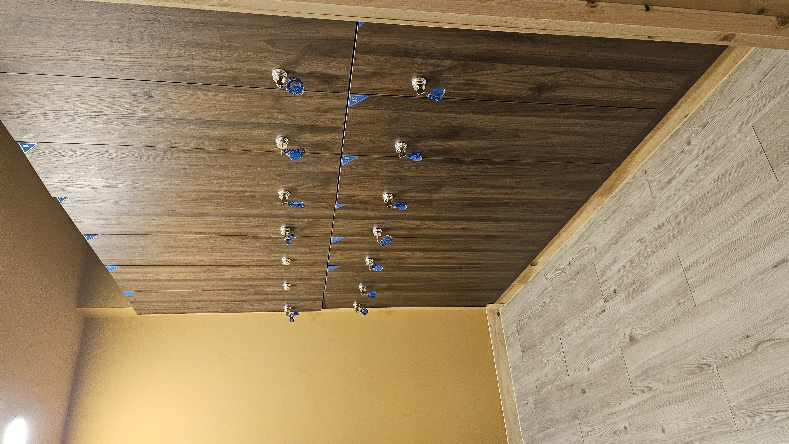
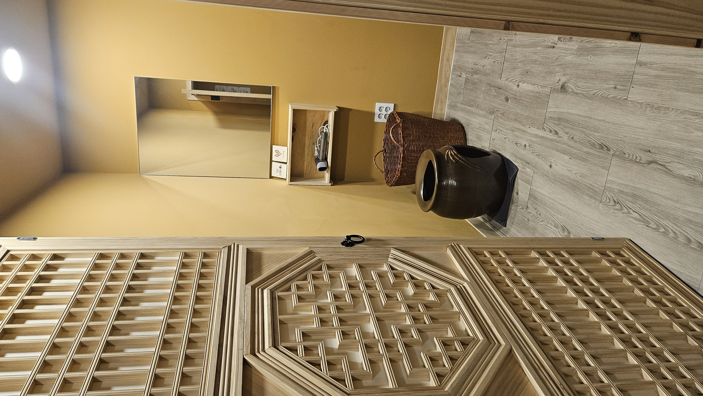
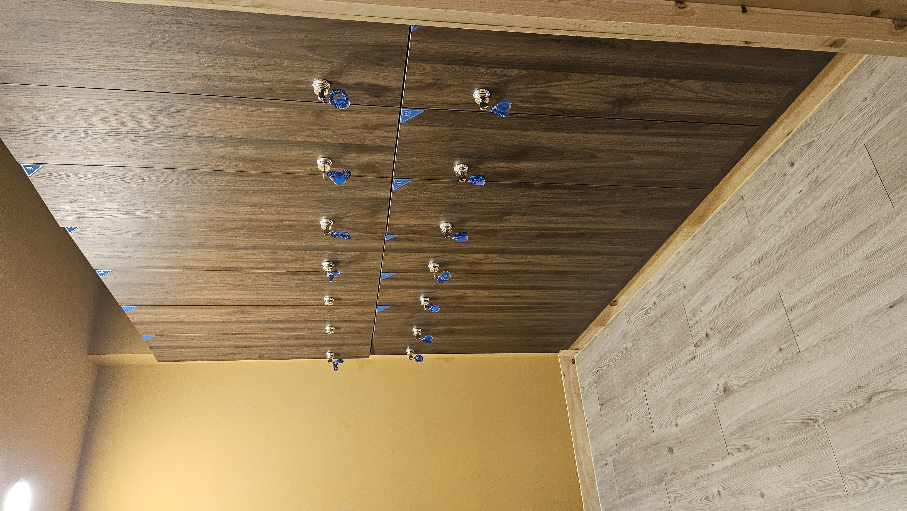
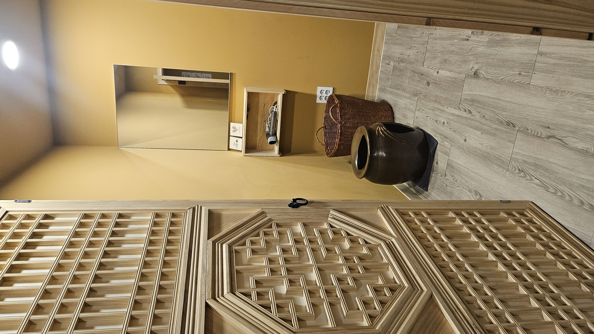

약석원은 깊은 산 중턱에 자리한
고요한 치유 공간에서 시작되었습니다.
자연이 길러낸 강화 약쑥은
오랜 세월 우리 전통 건강법에서 사랑 받아온 약재입니다.
순수한 자연환경에서 자란 강화 약쑥은
일반 약쑥보다 유효 성분이 풍부하고,
그 온기가 몸 깊숙이 퍼지는 듯한 편안함을 선사합니다.
이 강화 약쑥의 따뜻한 기운을
더 많은 분이 일상에서도 누릴 수 있도록
시흥 월곶에 새로운 쉼을 마련했습니다.
한국 전통의 온돌방과 기와의 멋을 그대로 담아낸
도심 속 한옥형 힐링 공간
모든 케어는 개인적으로 온돌방에서 진행됩니다.
문을 열고 들어서는 순간,
강화 약쑥의 은은한 향과 따뜻한 온기가
몸과 마음을 함께 감싸안습니다.
멀리 떠나지 않아도 괜찮습니다.
바쁜 하루 속에서도
잠시 쉬어갈 수 있는 곳,
약석원 시흥 월곶점에서
강화 약쑥의 깊은 온도를 느껴보세요.
강화 약쑥과 전통 한옥의 온기.
그리고 도심 속 편안함이 만나는 곳입니다.
건강한 하루는 가까운 곳에서 시작됩니다.
약석원에서 사용하는 강화약쑥에 대해 알아보기
해풍을 맞고 자란 '강화 약쑥'은 쑥잎의 생김새가 꼭 사자 발
모양으로 갈라져서 마디마디 착생하고 뒷면에 흰털이 나 있어
'사자발쑥'이라고도 불립니다. 강화에서 자란 사자발약쑥은 비옥한
토양과 해풍을 맞고 자라 특히, 강화를 벗어나면 모습 자체가
변형되면서 고유의 향과 서운이 사라지는 것으로 알려져 있어 지역적
특색이 뚜렷한 작물입니다.
유파틸린(eupatillin), 자세오시딘(jaceosidin)과 같은
플라보노이드의 함량이 높아 한약재 도매시장에서 최고로 치는
사자발약쑥을 동의보감은 독이 없고 만병을 다스리며 부인병에 좋아
자식을 낳게 한다고 했으며, 본초강목에서는 쑥은 속을 덥게 해 냉을
쫒으며 습을 덜어준다고 기록했습니다.
쑥좌훈과 찜질의 차이
찜질은 주로 외부에서 따뜻한 열을 공급하여 근육 이완과
혈액순환을 촉진하는 방법입니다. 반면, 쑥좌훈은 쑥의 약성을
증기로 전달하여 질 내부에 직접적으로 효과를 미치고, 향균 및
소염 작용이 이루어집니다.
찜질은 일반적으로 몸의 특정 부위에 온열 요법을 적용하지만,
쑥좌훈은 생식기를 포함한 전체적인 건강에 도움을 주기위한
방법으로 사용됩니다.
이와 같이 찜질과 쑥좌훈은 모두 온열 요법이지만, 그 적용 범위와
효능의 차이가 있음을 알 수 있습니다.
약석원 좌훈 체험이란?
우리 고유의 전통 기법으로 만든 옹기세레믹 쑥 좌훈기 안에서 나오는 원적외선 파장과 강화약쑥으로 나오는 열기로 항문혈, 회음혈을 동시에 자극하여 하복부 깊숙히 흡수되어 신진대사를 촉진시켜 면역력을 높여 우리 몸 스스로가 최적의 상태를 유지하도록 도와줍니다.

약석원 좌훈 체험을 하면
몸을 따뜻하게 하여
체내 순환을 촉진하며
소변과 땀으로 노폐물이
빠져나가게 해
다이어트를 돕습니다.
체내를 따뜻하게 하여
혈류를 원할하게 하는데
도움을 줍니다
혈류를 원할하게 해
손발저림에 도움을 주며
또한
몸을 따뜻하게 함으로써
손발이 찬 증상을 완화시키는데
도움을 줍니다
신진대사를 촉진시켜
면역력을 높여 우리몸 스스로가
최적의 상태로 유지되도록
도움을 줍니다.
약석원시흥월곶점에서 체험을 하면?
이 모든 과정을 최상의 환경, 쾌적한 환경, 365일 꺼지지 않는 뜨끈뜨끈한 온돌방, 혼자 오셔도, 삼삼오오 오셔도, 부부가 오셔도, 연인이 오셔도 프라이빗한 룸에서 체험하시게 됩니다. 자연에서 시작된 치유, 도심에서 이어집니다.


 



강화 약쑥 좌훈 체험 순서 안내
1) 편안한 체험복으로 갈아입기
약석원에서 제공하는 편안한 체험복으로 갈아입고 체험할 준비를 합니다. 좌훈은 증기를 온몸으로 흡수하는 과정이므로 편안한 체험 복으로 갈아입은 순간부터 몸과 마음이 체험에 몰입할 준비를 하게됩니다
2) 뜨끈뜨끈한 프라이빗룸에서 좌훈 체험 40분
안내 받은 뜨끈뜨근한 온돌방에서
1. 데워진 좌훈옹기에 앉아 쑥좌훈을 합니다. 온돌방에서 천천히
데워진 좌훈옹기에 쑥을 태운 뜸기를 넣습니다.
2. 뜸기를 넣으면 체험자는 좌훈옹기가 안보이게 치마로 폭~
감싸고 앉아 40분 동안 좌훈을 합니다. 이때 약쑥을 태운 연기의
훈연효과는 생식기와 회음혈, 항문혈을 통해 쑥의 약성을
전달하여 질 내부에 직접적으로 효과를 미치고, 향균 및
소염작용이 이루어 집니다.
3. 몸안으로 따뜻한 열이 전달되면 몸이 데워지면서 따뜻한 열을
공급하여 근육이완과 혈액순환을 돕고 땀과 소변으로 노폐물
배출을 돕습니다.
3) 배와 등에 각각 온열뜸 30분씩 체험
좌훈을 마친 후에는 뜨끈뜨끈한 방에 누워 온열뜸기를 배와 등에 각각 30분씩 올려놓고 휴식을 취합니다. 이를 통해 2차로 몸이 데워지면서 근육이완과 혈액순환을 돕고 땀을 통해 노폐물이 배출되게 도움을 줍니다. 이 과정에서 단순한 온열효과를 넘어 마음의 긴장을 덜어내고 숙면에 도움을 주는 이완의 시간을 갖게 됩니다. 모든 과정은 1시간 40분동안 프라이빗 룸에서 체험하게 되며, 3년 숙성시킨 강화 쑥의 따뜻한 기운이 하복부 깊이 전달되어 내장 기능을 편안하게 하고, 몸의 중심부에서 부터 따뜻함이 퍼저 나가 몸의 긴장을 풀어주어 눈을 감고 누워 있으면 마치 자연의 품안에 안겨있는 듯 몸과 마음이 안정되어 체험이 끝난 뒤에도 여운이 오래도록 남게 됩니다.
체험자들이 전하는 리뷰 둘러보기
체험 예약하기약석원 처음 방문했는데 공간부터 정말 편안했어요. 아늑한 황토빛 인테리어에 조용한 분위기라 들어가자마자 마음이 차분해집니다. 약석 좌훈도 따뜻함이 깊게 전해져서 몸 속까지 풀리는 느낌이었고, 준비된 차와 소소한 다과도 정갈해서 힐링 제대로 했어요. 개별 공간이라 프라이빗하게 이용할 수 있는 점도 너무 좋았고, 바닥 매트와 쿠션도 깔끔해서 위생적으로 느껴졌습니다. 몸이 무겁거나 피로할 때 재방문하고 싶은 곳이에요. 조용히 힐링하고 싶은 분들께 추천합니다 🌿
남친이랑 몸이 너무 찌뿌둥해서 강화에서 체험해보구 동네에도 생겼길래 앗싸하고 와서 힐링하고 갑니다. 땀도 잘 나고 한숨 푹자고 갑니다. 눈이 번쩍뜨이네요 허리 아픈 곳이랑 눈 침침한게 진짜 좋아졌어요 남친도 허리아팠다는데 지지니 좋다고 하네요~^^재방문 의사 있습니다
임신 준비 중인 부부에게 강력 추천합니다! ⭐⭐⭐⭐⭐ 임신 준비중이라 자궁 건강관리에 관심이 많아서 남편과 함께 1시간을 차로 달려왔는데, 정말 오길 잘했다는 생각이 듭니다. 원장님이 정말 친절하셔서 좋았어요! 좌훈과 찜질을 받고 나니 몸이 정말 개운해지고 가벼워진 느낌이에요. 그동안 다른 쑥뜸 하는 곳도 몇 군데 가봤는데, 청결이나 시설 면에서 조금씩 아쉬운 부분이 있었거든요. 그런데 여기는 시설도 깨끗하고 입는 옷도 청결해서 너무 마음에 들었어요. 특히 가족끼리, 친구끼리 프라이빗하게 방을 따로 써서 편하게 이용할 수 있는 점이 정말 좋았습니다. 남편과 함께 부담 없이 케어받을 수 있어서 더욱 만족스러웠어요!
가족끼리 왔는데 몸 따뜻하게 만족하고 갑니다.
몸안에 있는 노폐물이 다나오는 느낌입니다~ 겨울에 한번씩 하기 좋은것 같습니다~추천!
시험관 계획이 있어서 여러 곳 찾아 보다가 방문하게 되었습니다!! 살도 많이찌고 다이어트와 난임 고민때문에 방문하게 되었습니다. 시작하고 너무 뜨겁지는 않았지만 눈물이 ..온열뜸으로 허리와 등도 지지고 오늘 5회 끊고 다음주 방문 할 예정입니다!! 다이어트와 난임 한방해 해결 해 보도록 자주 방문해서 몸관리 해야겠어요 !!
평소 손발이 차가운 여자친구를 위해 시흥 약석원 방문했어요- 1시간 40분 동안 힐링의 시간 보내고 갑니다. 사장님도 너무 친절하셔요. 간식으로 제공해주시는 오란다와 차도 맛있어요. 또 올게요🤍
더 많은 리뷰를 보고 싶다면 아래 버튼을 눌러주세요.
리뷰 둘러보기오시는길
약석원 시흥 월곶점으로 오시는 길을 안내드립니다.
주소:
월곶중앙로14번길 65-1 경성빌딩 2층
월곶역 도보로 1~2분 거리
네이버 지도 이미지로 위치를 확인하고 방문 전 주차를 살펴보세요.
주차 안내
주차 위치와 동선을 사진으로 안내드립니다.